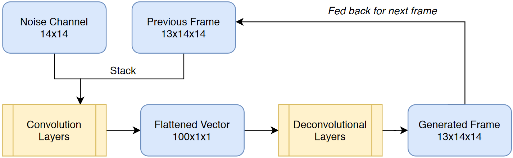
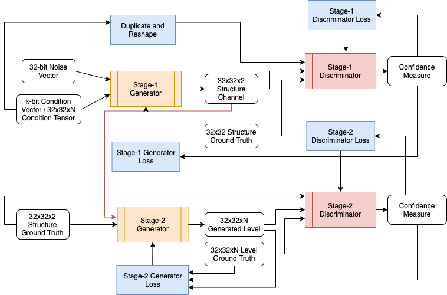

Our objective is to create game levels that contain various desired attributes
Game level design consumes a massive amount of time. Nowadays, a video game's longevity is strongly dependent on the frequency and quality of content updates. The benefits of automating level generation are apparent. However, generating game levels that are similar to human-created ones are challenging. Here we propose to leverage generative adversarial networks (GANs) to approach this intriguing topic by implementing the following points:
- Stitching generated frames for side-scrolling game with Conditional DCGAN
- Generate complex game maps via Multi-Stage GAN architecture
- Conduct latent space search for desired game attributes
Team memebers
Sophie Hsu
Ujjwal Puri
Sourish Banerjee
David Chen
Method Details
-
Conditional Deep Convolutional Generative Adversarial Network
We condition the Generator on the structural features of the previous frame as fellow:
This passed context of the previous frame also enables the DCGAN to learn the short term structural dependencies in a level.
-
Multi-Stage Generative Adversarial Network
The motivating factors for implementing a multi-stage GAN architecture are twofold: 1) break up the complex task of hallucinating game levels into more straightforward tasks for individual GANs to tackle, and 2) condition the GAN input on structural properties during training to preferentially generate levels with desired structure.
 -
Latent Space Exploration
A Covariance matrix adaptation evolution strategy (CMA-ES) is used to serach the latent space for desired level attributes. For example, we have levels with a lot of floating tiles which becomes challenging for the player to complete the game.
-
Evaluation Metrics
We use Kullback–Leibler divergence (KL divergence), measures of how similar two probability distributions are, to evaluate generated levels with respect to ground-truth levels. A sliding window of size N x N captures our levels and ground-truth levels, which we then compute distinct squares and their occurrences as the probability distribution.